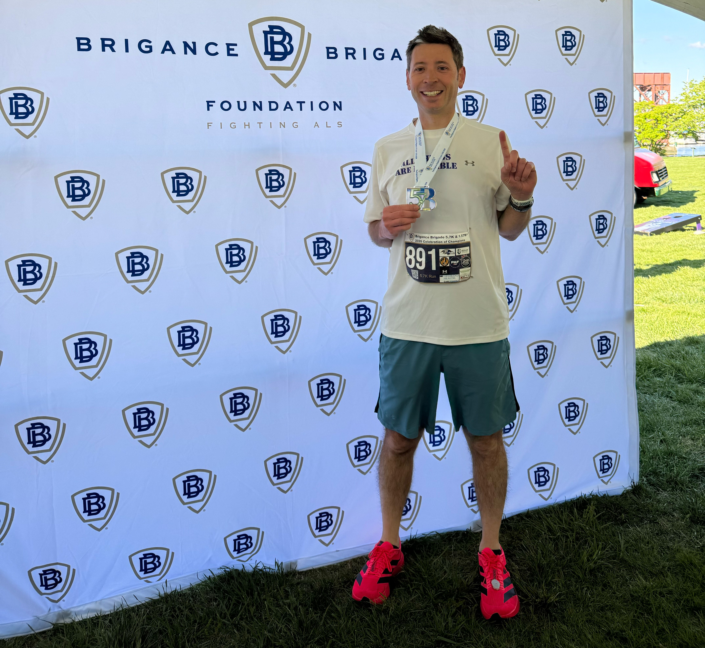
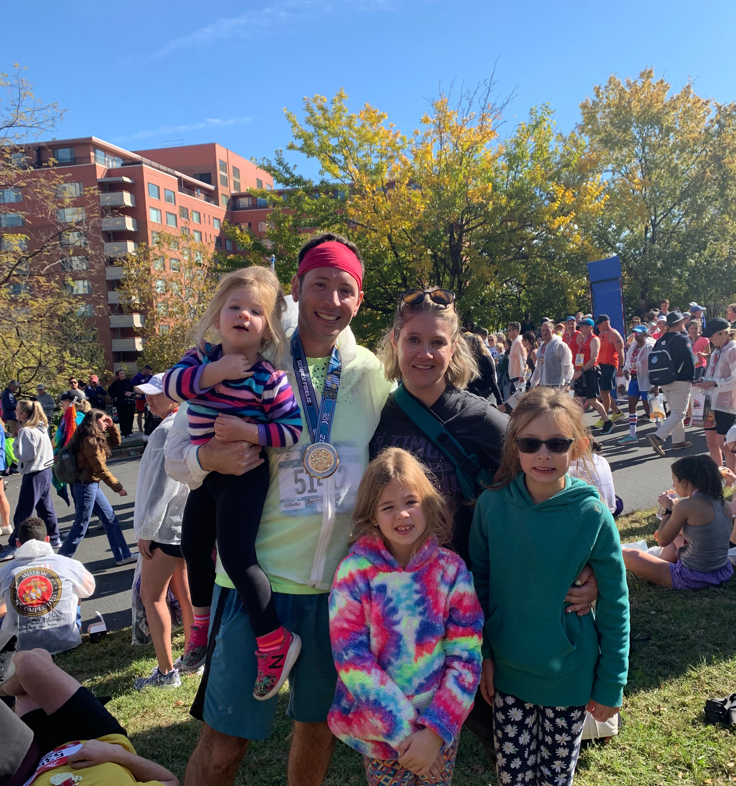
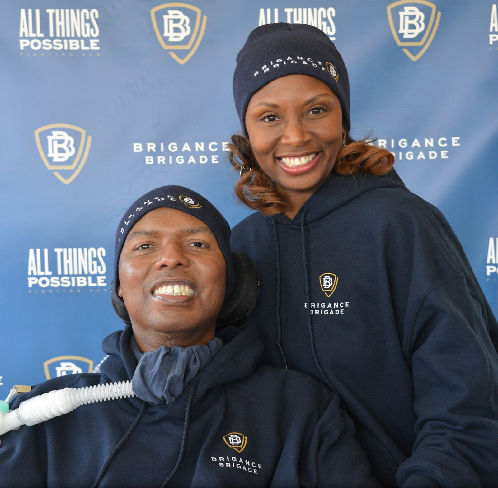

The People
Behind The Run

About Dave
Dave Lang is a husband and girl dad (of three). He grew up in Dumont, NJ and graduated from Loyola University. In 2007, he moved to Maryland to begin working for the Baltimore Ravens. During his first season, Dave befriended then-Director of Player Development O.J. Brigance, who had been diagnosed with ALS just one month earlier.
Now the Ravens’ Sr. Director of Digital Strategy & Innovation, Dave is proudly in his 20th season with the team. He has also served on the board for the Ravens Foundation since 2019.
Much more a “regular” guy than a world-class endurance athlete, Dave has completed all six races in the Baltimore Running Festival, including his first marathon in 2012 and a 4th-place overall finish in the 2025 Baltimoron-a-Thon. Dave also ran the 2022 Marine Corps Marathon 50K to raise $3,500+ for a friend battling breast cancer. In 2026, he took 1st place in the Brigance Brigade 5.7K. He and his family live in Eldersburg, MD.

About the Brigance Brigade
Following his diagnosis of amyotrophic lateral sclerosis in 2007, seven-year NFL veteran and Super Bowl XXXV champion O.J. Brigance and his wife, Chanda, created the Brigance Brigade Foundation to equip, encourage, and empower people living with ALS. The foundation's mission is to improve the quality of life for people living with ALS (PALS) and their families by providing access to support services, needed equipment and resource guidance.
Throughout 20 years, the BBF has helped hundreds of families across the mid-Atlantic region and beyond, increasing access to caregiving services, equipment, and in-home accessibility for PALS. In addition to providing financial help to offset some of the staggering costs associated with ALS, the BBF is also committed to programming that supports the mental, physical, and emotional health of ALS caregivers (CALS).